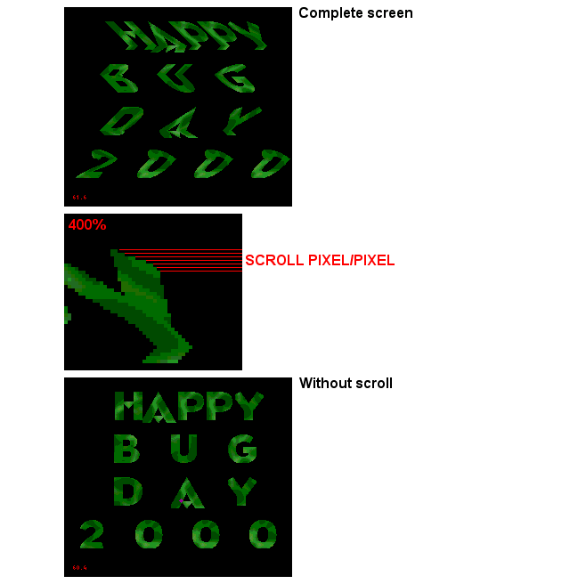

Pic 6 - Pixel/Pixel H Scrolling
In Kaneda's HBD demo, you can notice that the planes are scrolled horizontaly pixel/pixel.
It's exactly like the tile/tile scroll but, this time, each line in the H scroll-table will scroll a line in the plane.
